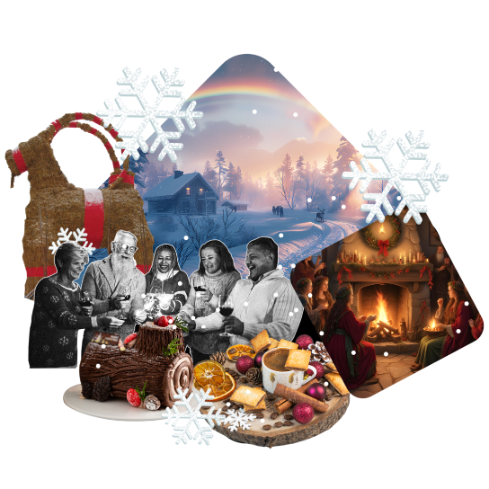
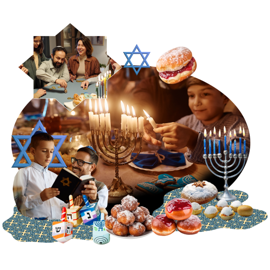
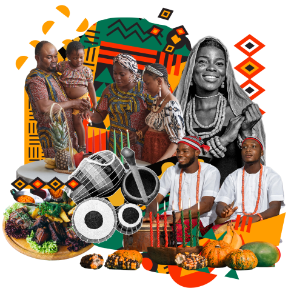

HIV/AIDS Awareness Month
World AIDS Month is observed annually in December to raise awareness about HIV/AIDS and to
support those affected by the virus. The key date within this
month is December 1, which is
recognized as World AIDS Day. Established in 1988 by the World Health Organization (WHO),
World AIDS Day is a global event dedicated to spreading awareness about HIV/AIDS,
commemorating those who have died from the disease, and promoting efforts to fight the epidemic.
(read more)
Universal Human Rights Month

On December 10, 1948, the United Nations General Assembly established a set of principles regarding equality,
fairness, and fundamental human rights that must
be universally protected. These principles recognize our
freedom to make choices about our lives and develop our human potential. The principles are about living free
from fear, harassment, and discrimination.
(read more)
World AIDS Day

December 1 is recognized as World AIDS Day. Established in 1988 by the World Health Organization (WHO),
World AIDS Day is a global event dedicated to
spreading awareness about HIV/AIDS,
commemorating those who have died from the disease, and promoting efforts to fight the epidemic.
(read more)
International Day for People with Disabilities
Since its inception in 1945, the United Nations (UN) has outlined and reiterated its commitment to calling
for the creation of inclusive, accessible and sustainable
societies and communities – most notably with the
adoption of the Universal Declaration of Human Rights in 1948.
(read more)
International Volunteer Day
Volunteerism is an enormous renewable resource for social, economic and environmental problem-solving
throughout the world. As the world faces
mounting challenges, volunteers are often the first to help.
Volunteers are at the fore in crises and emergencies, often in very testing and dire situations.
(read more)
International Genocide Prevention Day
Every 9 December, the Office of the Special Adviser on the Prevention of Genocide marks the adoption
of the Convention on the Prevention and Punishment of the
Crime of Genocide – a crucial global commitment that was made at the founding of the United Nations,
immediately preceding the Universal Declaration of Human Rights.
(read more)
International Human Rights Day
Human Rights Day is observed by the international community every year on 10 December.
It commemorates the day in 1948 when the General Assembly
adopted a "common standard of achievement
for all peoples and all nations", towards which individuals and societies should "strive by progressive measures,
national and international, to secure their universal and effective recognition and observance".
(read more)
Yule Winter Solstice

Yule is a traditional festival celebrated around the time of the winter solstice,
typically from December 21 to January 1. Its origins trace back to ancient pagan
and Norse traditions,
and it has been incorporated into various modern celebrations, including some aspects of Christmas.
(read more)
Christmas
Christmas is an annual festival commemorating the birth of Jesus Christ,
observed primarily on December 25 as a religious and cultural celebration
among billions
of people around the world. A feast central to the liturgical year in Christianity,
it follows the season of Advent (which begins four Sundays before) or the Nativity Fast,
and initiates the season of Christmastide, which historically in the West lasts twelve days
and culminates on Twelfth Night.
(read more)
Hanukkah

Hanukkah is a Jewish festival commemorating the recovery of Jerusalem and subsequent rededication of the
Second Temple at the beginning of the
Maccabean Revolt against the Seleucid Empire in the 2nd century BCE.
Hanukkah is observed for eight nights and days, starting on the 25th day of Kislev according to the Hebrew calendar,
which may occur at any time from late November to late December in the Gregorian calendar. The festival is
observed by lighting the candles of a candelabrum with nine branches, commonly called a menorah or hanukkiah.
(read more)
Boxing Day
Boxing Day is celebrated on December 26, the day after Christmas Day, primarily in the United Kingdom
and other countries historically connected to the British Empire, such as Canada, Australia, and New Zealand.
Kwanzaa

Kwanzaa is an annual celebration of African-American culture from December 26 to January 1,
culminating in a communal feast called Karamu, usually on the
sixth day. It was created by activist
Maulana Karenga, based on African harvest festival traditions from various parts of West and Southeast
Africa.
(read more)
New Year's Eve
In the Gregorian calendar, New Year's Eve, also known as Old Year's Day, is the evening or the
entire day of the last day of the year, 31 December. In many
countries, New Year's Eve is celebrated
with dancing, eating, drinking, and watching or lighting fireworks. The celebrations generally
go on past midnight into New Year's Day, 1 January.
(read more)